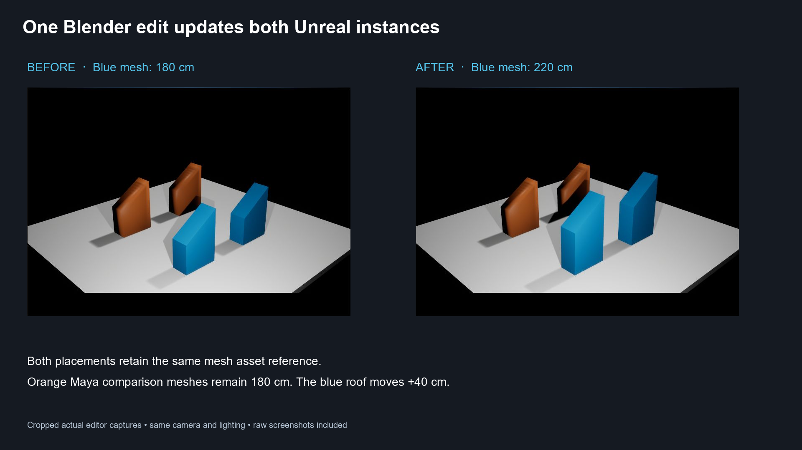

WEEK 7 · ACTUAL UI REHEARSAL · 13 OCTOBER 2026
One Blender edit updates both Unreal instances
The native Blender publisher sent the baseline and the edited mesh to the running Unreal editor. Both existing blue placements reference SM_Compare_Blender. The roof moved +40 cm, changing the asset height from 180 cm to 220 cm. The orange Maya comparison meshes remain 180 cm.
1920 × 1080 before/after PNG · Animated UI capture sequence · Engine verification · Capture provenance

Deck insertion proposal
Anchor: immediately after current slide 13, stable anchor 10, “Maya and Unreal handoff.” This page is a review and a draft. The open PowerPoint has not been modified.
Current slide 13
Title: “Maya and Unreal handoff”
Caption: “Course schematic · file exchange and revision loop”
Question: “What must remain stable when the Maya source changes?”
Proposed single Blender slide
Title: Blender uses the same Unreal handoff
Visual: the before/after captures above, with blue Blender and orange Maya labels.
Body: New host adapter. Shared FBX + JSON contract and receiver.
Question: Why did both placements change after one publish?
| Field | Keep / change |
|---|
| Existing Maya slide | Keep its title, schematic and prediction question. It establishes the contract. |
| New companion | Use the existing deck theme and type styles. Place the raw captures inside that theme; the provided PNG is a ready-to-use fallback. |
| Timing | About 60–90 seconds of explanation. Use the animated still sequence as backup if a full live demonstration does not fit. |
| Optional depth | Link to the comparison guide and source adapters rather than adding export settings to the slide. |
Read-aloud speaker notes
Here is the same handoff from Blender. The blue props are two placements of one Unreal mesh asset. The orange props came through the Maya publisher and give us a comparison.
I select the four roof vertices in Blender and move them up forty centimetres. The base and origin stay in place. Back in Object Mode, I click Publish and Send. The button exports an FBX and a JSON manifest, then asks the Unreal receiver to import that revision. The acknowledgement confirms that Unreal accepted it.
Watch both blue placements. They become taller together because both reference the same asset. We did not replace either actor. The orange meshes remain unchanged.
The host-specific work is selection, geometry evaluation and FBX export. Blender uses bpy and evaluated meshes. Maya uses its own scene and FBX APIs. The naming rules, revision handling, manifest, send operation and Unreal receiver stay shared. Which values must remain stable for this update to reach the intended asset?
Teaching rationale
Students can inspect two real source scenes and compare the small adapters against one common pipeline. This makes the distinction between an asset and its placements visible. It also gives a concrete functional test to contrast with ordinary Python contract tests.
Captured workflow
This is a timed slideshow of actual UI stills, not continuous video. The raw application screenshots remain available without labels or cropping.
Play the captured sequence

Before: 180 cm

- Open
Samples/Bridge/BridgeCompare.blend. Run Scripts/bridge/open_blender.py once to register the sidebar. - Open Unreal’s
W07_BridgeComparison map. Run Scripts/bridge/start_unreal.py, or use the installed Tools menu receiver command. - Click Publish & Send to Unreal for the baseline. Confirm “Imported” in Blender.
- Enter Edit Mode. Front view, X-ray on, box-select the four roof vertices. Move on Z by
0.4 metres. The bottom vertices stay fixed. - Return to Object Mode and click Publish & Send again. Check both blue placements and the acknowledgement.
- Save As
BridgeCompare_UI_Rehearsal.blend. The original baseline remains available for repeating the exercise.
The editor was left showing the revised result. The saved comparison map now includes camera fill lighting and a unique directional-light priority. Republish the baseline at the start of the next rehearsal. The receiver is session-local and must be started after reopening Unreal.
What to integrate from the recent Karol downloads
Recommendation: integrate the patterns and teaching comparisons below. Keep the current small bridge as the class implementation. These recommendations come from inspection of local archive contents and the existing project code. Downloaded project scripts were not executed or installed.
| Material inspected | Fit and concrete integration | Status |
|---|
Python.zip: batch and remote FBX import | Use the task/options/import sequence to explain the Unreal boundary. Compare a simple boolean response with our verified asset path, revision and dimensions. Keep FBX + JSON and the shared receiver. | Concept already reflected in the bridge. Source attribution retained. |
| Remote Control examples | Optional extension: implement an HTTP transport adapter behind the existing client and receiver contract. The current file inbox already provides real same-machine communication. Remote Control would add a plugin, endpoint and connection setup, without improving this local classroom proof. | Explore further. No additional server enabled. |
ExamplePlugin_FixTextureCompression.zip | Useful packaging/menu example. Its startup script calls UI setup automatically. For the current Material Assistant, prefer a read-only list of all sRGB/compression mismatches before offering an explicit scoped fix. Reuse the same report in PySide and native Unreal. | Best next tooling improvement. Existing checks currently stop on the first failed rule. No downloaded startup hook copied. |
| Validation and post-import callbacks | Use validators as a comparison exercise. Square textures and power-of-two dimensions are project rules, not universal requirements. The callback example moves imported assets based on metadata; adopting that directly could change stable bridge destinations. | Teaching material now. Automatic relocation deferred. |
| Transactions, progress and automated-test appendix | Explain which actions support Undo and which require explicit recovery. Add the two-instance update to the functional-test checklist. Ordinary Python tests validate contract logic; this UI rehearsal validates the real application handoff. | Integrated into this rehearsal’s notes and verification. Do not imply FBX reimport is fully undone by an editor transaction. |
UE5_2_project.zip | Reference for older course setup and API examples. It targets UE 5.2. The teaching implementation runs in UE 5.7.4, so review each relevant API against the installed editor rather than merging its configuration. | Instructor reference only. |
VP_Demo_UE53_starting_point.zip | Targets UE 5.3 with Live Link, Remote Control, nDisplay, Composure, camera and media plugins. Useful for a separate virtual-production branch of the curriculum. | Keep outside this static-mesh/Material-VFX lesson. |
Files.zip | Contains two photographs, not the expected course project files. | Excluded from tooling integration and Git snapshot. |
Keep Karol Kowalczyk / Tech Art Corner attribution in instructor materials. No redistribution license was found in the inspected archives. The paid-course archives and scripts were not added to the student package or this Git snapshot. The local lesson 46 refined note still says its original content is empty, so it supplies no implementation evidence.
Bridge setup and technical comparison · Archive inventory · Karol course · Requested Blender Conference reference
The conference character-workflow reference has a broader rigging/animation scope. This is an independently written static-mesh teaching bridge.